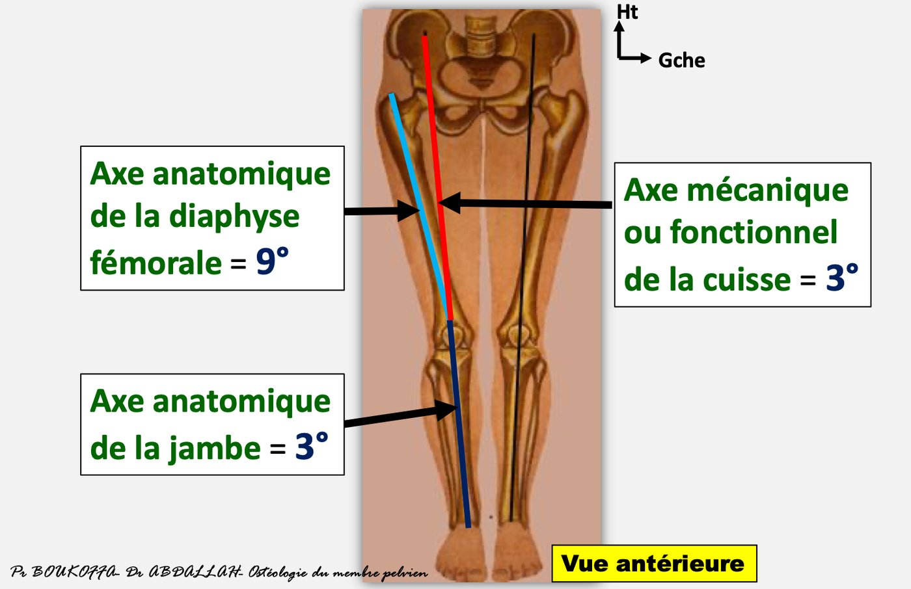
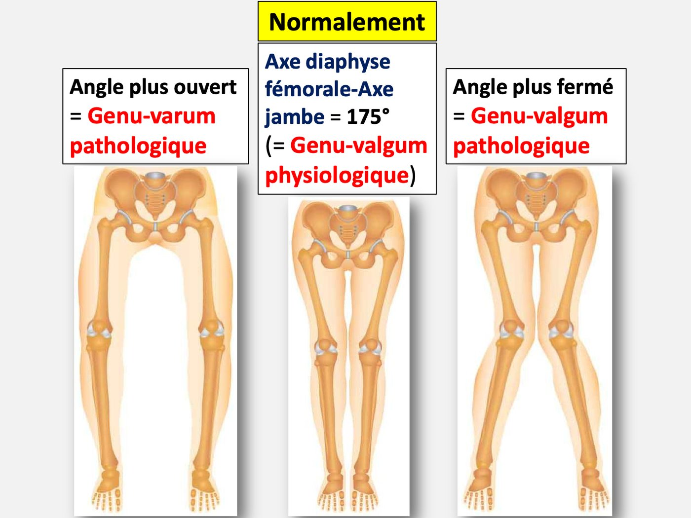
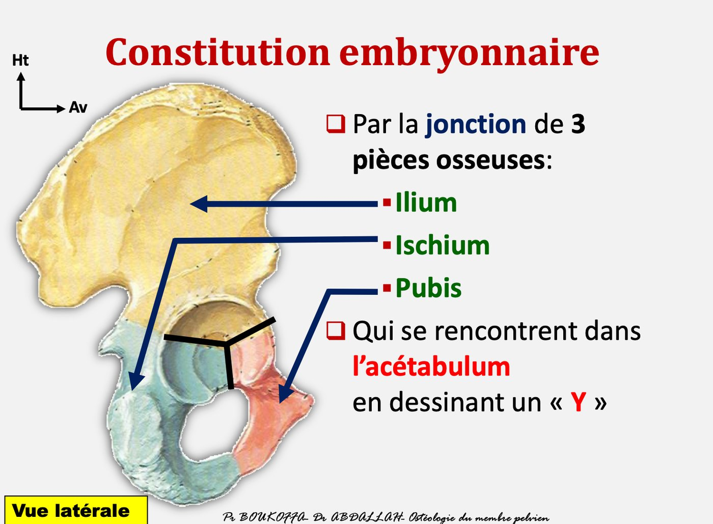
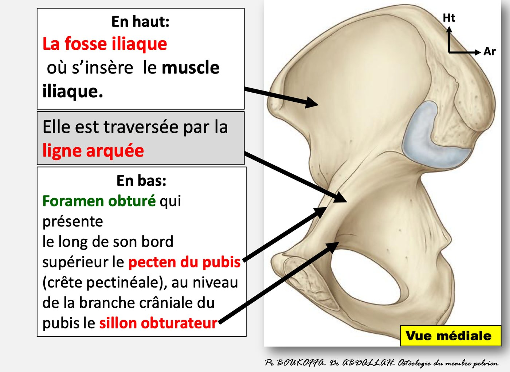
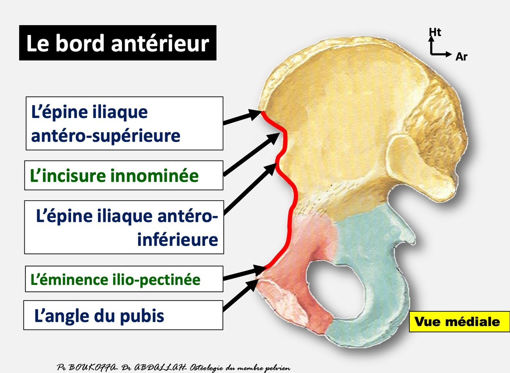
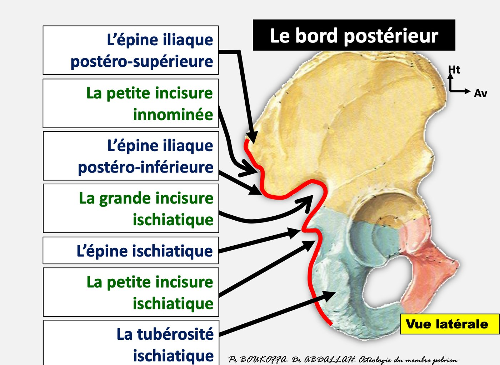
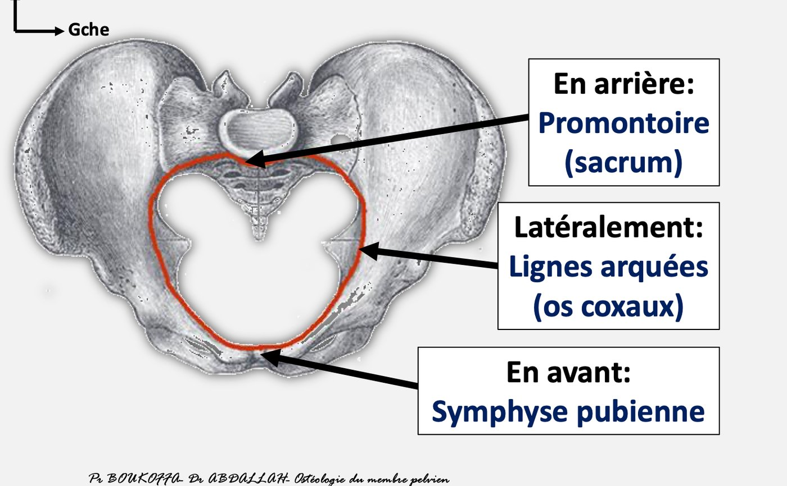
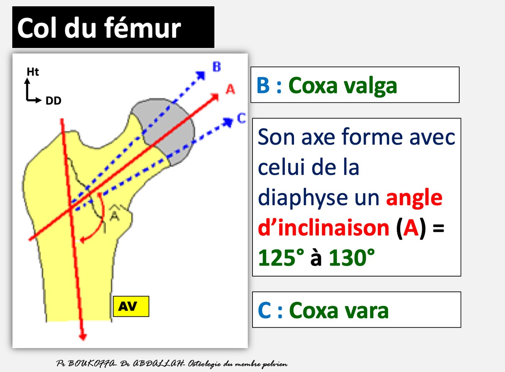
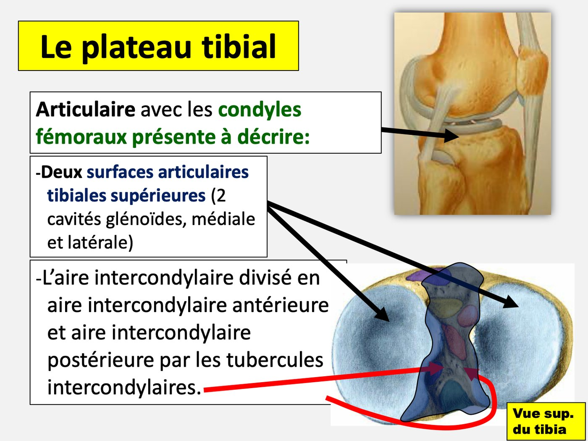
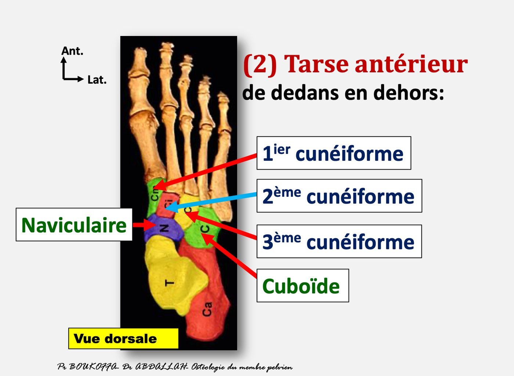

Osteology of the pelvic limb
- Essentials
- Overview & axes
- Hip bone
- Bony pelvis
- Femur
- Patella
- Tibia
- Fibula
- Foot
- Exam traps
- Self-check
- Hip bone = ilium + ischium + pubis, meeting in the acetabulum as a "Y". Lateral face: gluteal surface (2 gluteal lines), acetabulum (limbus, semilunar surface, fossa), obturator foramen. Medial face: iliac fossa, arcuate line, pecten pubis, obturator groove, auricular surface.
- Anterior border: ASIS, innominate notch, AIIS, iliopectineal eminence, angle of the pubis. Posterior border: PSIS, lesser innominate notch, PIIS, greater sciatic notch, ischial spine, lesser sciatic notch, ischial tuberosity.
- Pelvic inlet (superior strait): sacral promontory behind, arcuate lines laterally, pubic symphysis in front.
- Femur: head = 2/3 of a sphere with the fovea capitis; neck–shaft angle 125–130° (more open = coxa valga, more closed = coxa vara). Greater trochanter = lateral, quadrangular, trochanteric fossa. Distal articular surfaces = patellar surface + 2 condyles.
- Tibial plateau = 2 superior articular surfaces + intercondylar area (anterior and posterior) + 2 intercondylar tubercles. Proximal tuberosities: anterior, lateral, medial. Distal articular surfaces: inferior tibial surface + medial malleolus.
- Foot = 26 bones: tarsus 7 (posterior: talus, calcaneus; anterior: navicular, 3 cuneiforms, cuboid), 5 metatarsals, 14 phalanges.
I. Overview and skeletal axes p. 3 slides p. 13–18
- Thigh: femur + patella. Leg: tibia + fibula. Foot skeleton.
- Connected to the trunk by the pelvic girdle: the 2 hip bones, sacrum and coccyx.
| Axis | Course | Angle with the vertical |
|---|---|---|
| Anatomical axis of the femoral diaphysis | Oblique downward and inward | 9° |
| Mechanical (functional) axis of the thigh | Centre of the femoral head → centre of the knee (top of the patella) | 3° |
| Anatomical axis of the leg | Centre of the knee → middle of the ankle | 3° |
Femoral axis + leg axis = an angle open outward of 175° = physiological genu valgum. More closed → pathological genu valgum (legs in X); more open → pathological genu varum (legs in O).


1. Hip bone (os coxae, iliac bone) p. 3–4 slides p. 20–42 2023-24 · 2024-25 · 2025-26
Flat bone shaped like a two-bladed propeller; connects the spine and the pelvic limb. Embryologically: ilium, ischium, pubis, meeting in the acetabulum in a "Y". Set up: joint cavity lateral; foramen down; notched edge backward. To describe: 2 faces, 4 borders, 4 angles.

Lateral face — top to bottom 🎯
| Structure | Features |
|---|---|
| Gluteal surface (lateral iliac fossa) | 2 gluteal lines, anterior and posterior, delimiting the fields of the gluteus minimus, medius and maximus |
| Acetabulum | Deep spheroid cavity bounded by the acetabular limbus (rim) with 3 notches (the lower one, the acetabular notch,
wide and deep) at the junctions of the 3 pieces. • Peripheral part: semilunar surface, articular, crescent-shaped, hyaline cartilage • Central part: acetabular fossa, non-articular |
| Obturator foramen (ischiopubic) | Large opening below the acetabulum, closed by 2 obturator membranes. Oval and narrow in men, triangular and wide in women. Its frame: above = cranial ramus of the pubis + obturator groove; front = body of the pubis; behind = ischial tuberosity; below = ischiopubic ramus |
Medial face 🎯
- Crossed by the arcuate line (ridge of the superior strait), which divides it into: above, the iliac fossa (→ iliacus muscle); below, the obturator foramen region, with the pecten pubis (pectineal crest) along its upper border and the obturator groove on the cranial ramus of the pubis.
- Behind the arcuate line: the auricular surface (articulates with the sacrum); behind it attach the sacroiliac ligaments.

Borders 🎯
| Border | Features (top to bottom) |
|---|---|
| Superior = iliac crest | Palpable, easy to find; site of bone punctures and bone-graft harvesting |
| Inferior | Its anterior segment articulates with the opposite hip bone → pubic symphysis |
| Anterior | Anterior superior iliac spine → innominate notch → anterior inferior iliac spine → iliopectineal eminence → angle of the pubis |
| Posterior | Posterior superior iliac spine → lesser innominate notch → posterior inferior iliac spine → greater sciatic notch → ischial spine → lesser sciatic notch → ischial tuberosity |


Angles
| Angle | Corresponds to |
|---|---|
| Anterosuperior | Anterior superior iliac spine |
| Posterosuperior | Posterior superior iliac spine |
| Anteroinferior | Pubic spine |
| Posteroinferior | Ischial tuberosity |
Note: the bony pelvis p. 5 slides p. 44–47 2025-26
- 2 hip bones + sacrum + coccyx.
- Divided by the plane of the superior strait (pelvic inlet) into the greater pelvis above and the lesser pelvis (obstetric pelvis, pelvic excavation) below.
- Pelvic inlet boundaries: behind the sacral promontory; laterally the arcuate lines; in front the (superior border of the) pubic symphysis.
- Pelvimetry (limits and diameters) matters in obstetrics: crossing the superior strait by the largest diameter of the presenting part = engagement.

2. Femur p. 5–6 slides p. 51–70 2023-24 · 2024-25 · 2025-26
Long bone of the thigh; articulates with the hip bone above and the tibia and patella below. Set up: angled end up; its articular surface medial; the most prominent border backward.
| Part | Features |
|---|---|
| Diaphysis | 3 surfaces (anterior, posterolateral, posteromedial) → quadriceps. 3 borders (lateral, medial, posterior). Posterior border = linea aspera: prominent rough crest, trifurcates above, bifurcates below to bound the popliteal surface |
| Femoral head 🎯 | Rounded, 2/3 of a sphere, covered with cartilage except at the fovea capitis (ligament of the head = round ligament); → acetabulum |
| Neck 🎯 | Neck–shaft angle of inclination 125°–130°. More open = coxa valga; more closed = coxa vara |
| Greater trochanter 🎯 | Lateral, quadrangular projection; its medial face shows the trochanteric (digital) fossa |
| Lesser trochanter | Medial, conical projection |
| Between trochanters | In front: intertrochanteric line; behind: intertrochanteric crest |
| Distal epiphysis 🎯 | Patellar surface (femoral trochlea), anterior → posterior face of the patella. 2 condyles, medial and lateral, each curled on itself → tibial plateau and patella; separated behind by the intercondylar fossa (cruciate ligaments). Each condyle's side carries an epicondyle (lateral, medial) for the collateral ligaments |

3. Patella p. 6 slides p. 72–73
Sesamoid bone, flat and triangular, in the quadriceps femoris tendon, at the front of the knee.
- 2 faces: anterior convex; posterior articular with the femoral trochlea.
- 2 borders: lateral and medial.
- Base (superior): quadriceps tendon. Apex (inferior): patellar ligament.
4.1 Tibia p. 6–7 slides p. 77–94 2023-24 · 2024-25 · 2025-26
Medial and main leg bone; articulates with the femur and fibula above, the talus below. Set up: smaller end down; its process medial; sharpest border forward.
| Part | Features |
|---|---|
| Diaphysis (prismatic, triangular) | Lateral face → tibialis anterior. Medial face → smooth, subcutaneous, no muscle insertion. Posterior face → oblique soleal line. Borders: medial, lateral (interosseous), anterior (subcutaneous = tibial crest) |
| Proximal epiphysis | Large quadrangular pyramid, base up: • Base = tibial plateau 🎯: 2 superior tibial articular surfaces (medial and lateral glenoid cavities) → femoral condyles; intercondylar area, divided into anterior and posterior areas by the 2 intercondylar tubercles (tibial spines) • Anterior face: anterior tibial tuberosity → patellar ligament • Posterior face: laterally the fibular articular surface • 2 side faces: lateral and medial tibial tuberosities |
| Distal epiphysis 🎯 | Inferior face: 2 continuous articular surfaces (tibial plafond) → talus: the inferior tibial articular surface and
the articular surface of the medial malleolus. Fibular notch on the lateral face (→ distal fibula). Medial malleolus: process extending the medial face, articulates with the talus |

4.2 Fibula p. 7–8 slides p. 96–102
Lateral, slender leg bone; articulates with the tibia above and the tibia and talus below. Set up: flattened end down; its articular facet medial; its rough fossa backward.
- Diaphysis triangular: 3 faces (lateral, medial, posterior), 3 borders (lateral, medial, anterior); interosseous crest (slide).
- Proximal epiphysis = head of the fibula, articulates with the tibia.
- Distal epiphysis = lateral malleolus: longer, larger and lower than the medial malleolus; its medial surface articulates with the talus.
5. Foot bones — 26 p. 8 slides p. 105–117 2023-24
| Group | Count | Bones |
|---|---|---|
| Posterior tarsus | 2 | Talus (astragalus), calcaneus |
| Anterior tarsus 🎯 | 5 | Medial → lateral: navicular (scaphoid), 1st (medial), 2nd (intermediate), 3rd (lateral) cuneiforms, cuboid |
| Metatarsus | 5 | Long bones numbered I–V from medial; each = body, head (anterior), base (posterior) |
| Phalanges | 14 | 3 per toe (proximal, middle, distal), 2 for the hallux |
- The 2 tarsal rows are joined by the mid-tarsal (Chopart) joint; tarsus and metatarsus by the tarsometatarsal (Lisfranc) joint.
- Sesamoid bones of the foot are always plantar; 2 are constant, facing the head of the 1st metatarsal (1st metatarsophalangeal joint).

Exam traps
- Lateral face includes the "arcuate line", "auricular surface", "pecten pubis" or "obturator groove" — false: those are medial. Medial face includes "gluteal lines/surface" — false. 3 years
- Anterior border includes the "greater sciatic notch", "lesser innominate notch", "ischial tuberosity" — false (posterior). Posterior border includes the "innominate notch" or "iliopectineal eminence" — false (anterior). 2 years
- Pelvic inlet: "ischial tuberosity in front", "coccyx behind" — false. 2025-26
- Femoral head "covered with fibrous cartilage", "1/3 of a sphere", "presents the intertrochanteric line" — false. 2025-26
- Coxa valga at 100–130° — false: valga = more open than 125–130° (140°). 2025-26
- Greater trochanter "medial" or "rounded"; "fovea capitis" on it — false. 2024-25
- Distal femur articular surfaces include "epicondyle", "intercondylar fossa", "posterior surface of the patella" — false. 2 years
- Tibial plateau includes the "anterior tibial tuberosity", "medial tibial tuberosity", "fibular articular surface", "oblique crest", "medial malleolus" — false. 3 years
- Distal tibia articular surfaces include the "superior tibial surfaces" or "lateral malleolus" (that's the fibula) — false. 2 years
- Proximal tibia has a "posterior" or "inferior" tuberosity — false: anterior, lateral, medial. 2025-26
- Anterior tarsus includes "lunate" (carpus), "talus", "calcaneus" (posterior tarsus) — false. 2023-24